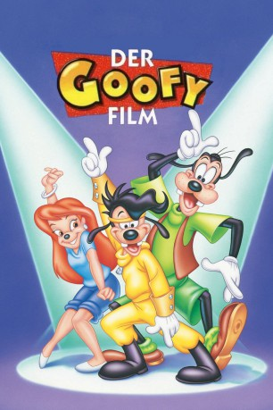

#6294 Der Goofy Film
Alternativ: A Goofy Movie
 
 IMDB-Wertung: 6.8 / 10
IMDB-Wertung: 6.8 / 10  Metascore: 0
Metascore: 0 
Während Vater Goofy schon immer der Trottel vom Dienst war, ist sein schüchterner Sohn Max bemüht, sich einen cooleren Lifestyle anzueignen. Um das Herz der angebeteten Roxanne zu erobern, immitiert er sogar das Pop-Idoll Powerline. Als das Glück im greifbarer Nähe scheint, hat Goofy jedoch schon längst einen Angeltrip durch den Kontinent geplant. Die turbulente Reise machen Vater und Sohn schließlich zu dicken Freunden und Max zum Herzensbrecher.
Jahr: 1995
Dauer: 74 Minuten
FSK: 6
Land: USA Studio: Buena Vista PicturesTonspuren: DD2.0 - ,
Untertitel:
Auflösung: 1080p (1920x1080) Größe: 4823 MB
Genre: Komödie, Abenteuer, Animation/Trick, Familie, Liebe, Musical
Regisseur: Kevin Lima
Drehbuch: Toei Company
Soundtrack:
Darsteller:
 Bill Farmer als Goofy
Bill Farmer als Goofy Jason Marsden als Max Goof
Jason Marsden als Max Goof Jim Cummings als Pete
Jim Cummings als Pete- Kellie Martin als Roxanne
 Rob Paulsen als P.J. Pete
Rob Paulsen als P.J. Pete Wallace Shawn als Principal Mazur
Wallace Shawn als Principal Mazur- Jenna von Oÿ als Stacey
 Frank Welker als Bigfoot
Frank Welker als Bigfoot- Kevin Lima als Lester
- Florence Stanley als Waitress
- Jo Anne Worley als Miss Maples
 Julie Brown als Lisa
Julie Brown als Lisa- Joey Lawrence als Chad
 Pat Buttram als Possum Park Emcee
Pat Buttram als Possum Park Emcee Wayne Allwine als Mickey Mouse
Wayne Allwine als Mickey Mouse Dante Basco als Additional Voices
Dante Basco als Additional Voices- Sheryl Bernstein als Additional Voices
 Corey Burton als Additional Voices
Corey Burton als Additional Voices Pat Carroll als Additional Voices
Pat Carroll als Additional Voices Elizabeth Daily als Additional Voices
Elizabeth Daily als Additional Voices- Tevin Campbell als Powerline , singing voice
- Aaron Lohr als Max Goof , singing voice
- Brittany Alyse Smith als Photo Studio Girl
- Robyn Richards als Lester's Grinning Girl
- Klee Bragger als Tourist Kid
- Herschel Sparber als Security Guard
- Carole Holliday als Additional Voices
- Steve Moore als Additional Voices
- Brian Pimental als Additional Voices
- Jason Willinger als Additional Voices
Datei: X:\Kinder Disney HD\Classic Cartoon\Goofy Film, Der (1995, FSK6, 1920x1080).mkv seit 06.06.2017
Festplatte: Kinder-Filme+Trick
 Es gibt insgesamt 22 Filme in der Gruppe 'Kinder Disney HD\Classic Cartoon'
Es gibt insgesamt 22 Filme in der Gruppe 'Kinder Disney HD\Classic Cartoon'